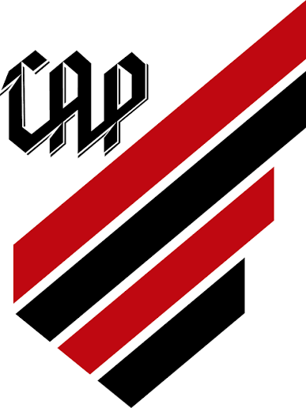

Club Athletico Paranaense

História e Glórias

Fundação: 26 de março de 1924
O Club Athletico Paranaense nasceu da fusão entre o International Foot-Ball Club e o América Futebol Clube. O clube carrega o apelido de "Furacão" desde 1949, quando montou um esquadrão que aplicou goleadas impiedosas no campeonato estadual, ganhando fama nacional por seu ímpeto ofensivo.
Reconhecido por ter uma das infraestruturas mais modernas da América Latina, incluindo a Ligga Arena (a primeira arena com teto retrátil do Brasil) e o CT do Caju, o clube quebrou a hegemonia do eixo Rio-São Paulo. Conquistou o Campeonato Brasileiro em 2001 e consolidou sua força internacional levantando duas Copas Sul-Americanas (2018 e 2021).
Principais Títulos 🏆
- Copa Sul-Americana: 2 (2018, 2021)
- Campeonato Brasileiro: 1 (2001)
- Copa do Brasil: 1 (2019)
Hino do Clube
Athletico! Athletico!
Conhecemos teu valor
E a camisa rubro-negra
Só se veste por amor!
Vamos marchar, sempre cantando
O hino do Furacão
E no peito ostentando
A faixa de campeão!
O coração athleticano
Estará sempre voltado
Para os feitos do presente
E as glórias do passado!
A tradição, a raça, o destemor
Ousadia, a rebeldia, o Furacão
São virtudes que o torcedor
Traz dentro do coração!
Conhecemos teu valor
E a camisa rubro-negra
Só se veste por amor!
Vamos marchar, sempre cantando
O hino do Furacão
E no peito ostentando
A faixa de campeão!
O coração athleticano
Estará sempre voltado
Para os feitos do presente
E as glórias do passado!
A tradição, a raça, o destemor
Ousadia, a rebeldia, o Furacão
São virtudes que o torcedor
Traz dentro do coração!